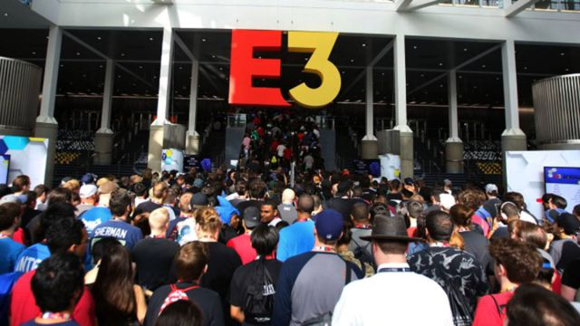
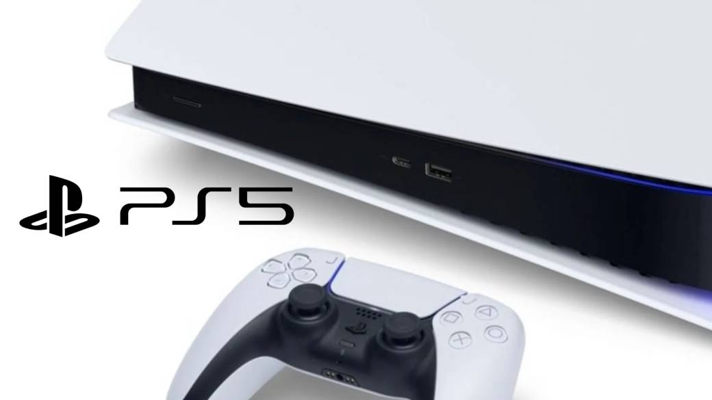

La Electronic Entertainment Expo, más conocida por su abreviatura E3, es la convención de videojuegos más importante de la industria, en la que diversas compañías de videojuegos hablan de sus próximos lanzamientos, y algunas veces de su software y hardware.La Entertainment Software Association (ESA) ha confirmado la cancelación del E3 2022. Un comunicado oficial cerca de la medianoche de este viernes daba por zanjadas las informaciones adelantadas por medios como IGN, que aseguraba pocas horas antes la inminente anulación por tercer año consecutivo del E3 de manera presencial. Y así es. No en vano, el E3 2023 ya es oficial y volverá en formato tanto presencial como digital el próximo verano.
Sony anuncia la fecha de presentación de la PS5 Sony ha anunciado que la Playstation 5 (PS5) se presentará el 4 de junio en un evento especial en el que mostrarán el catálogo de lanzamiento de la consola.
